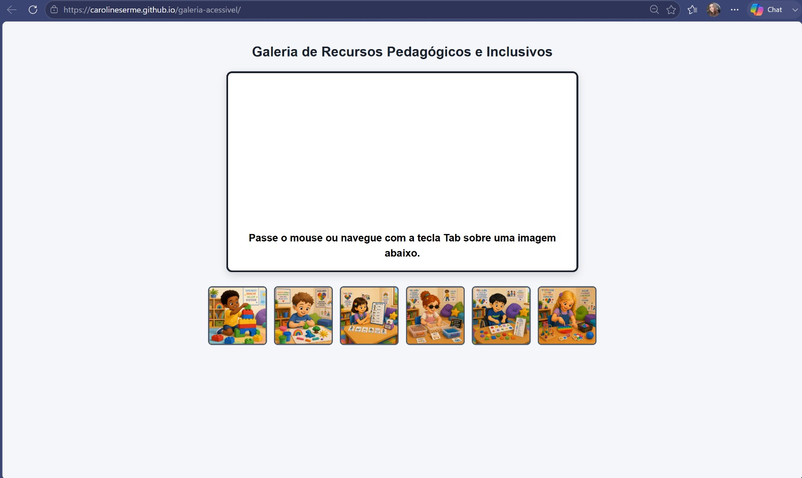
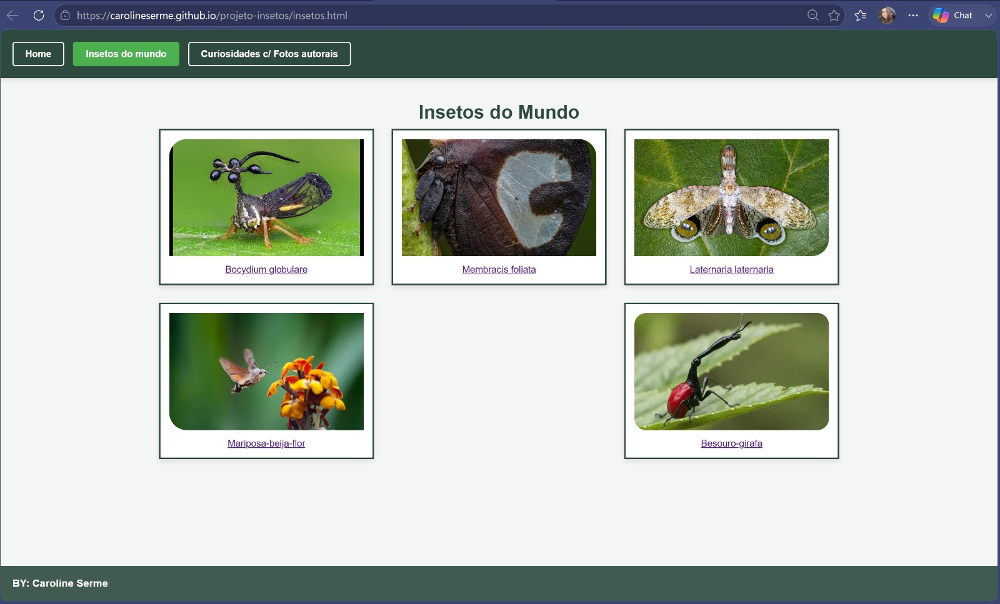
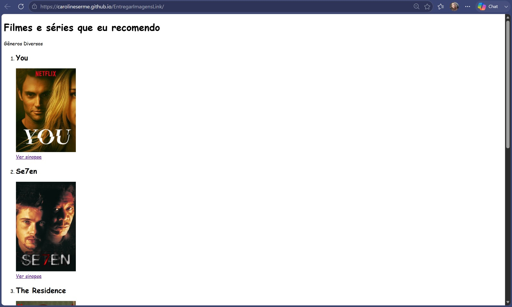

Projetos e Estudos de Caso

Galeria Inclusiva e Acessível
Aplicação voltada para recursos pedagógicos com foco em acessibilidade e navegação por teclado (Tab).
Estudo de Caso
BioInsetos - Insetos do Mundo
Website interativo com galeria visual e informações educativas sobre insetos do mundo.
Estudo de Caso
Guia de Filmes e Séries
Plataforma simples de curadoria e recomendações visuais com sinopses e hiperlinks.
Estudo de Caso
Aplicativo UX/UI Inclusivo
Estudo de caso e processo de design (wireframes no papel e post-its) focado na experiência do usuário.
Estudo de Caso